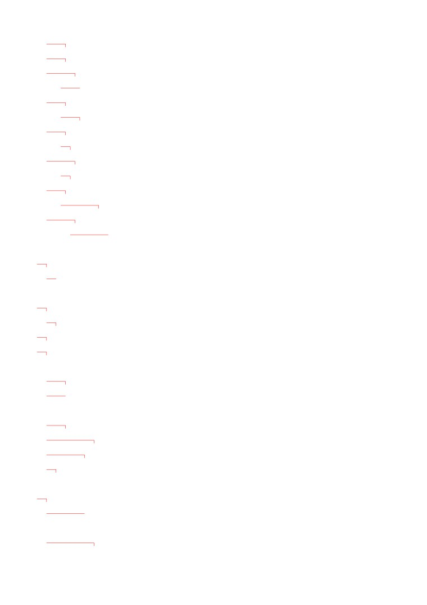
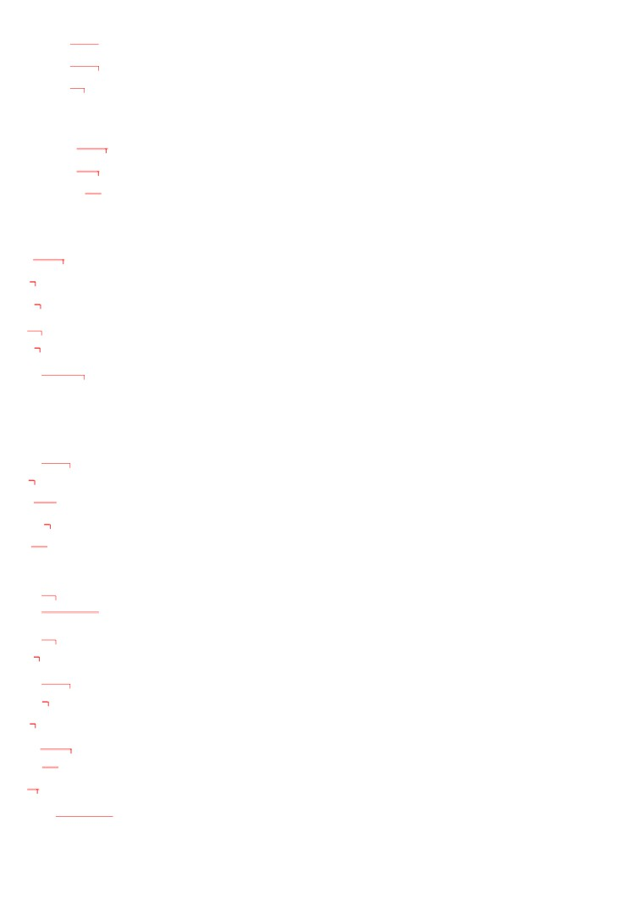
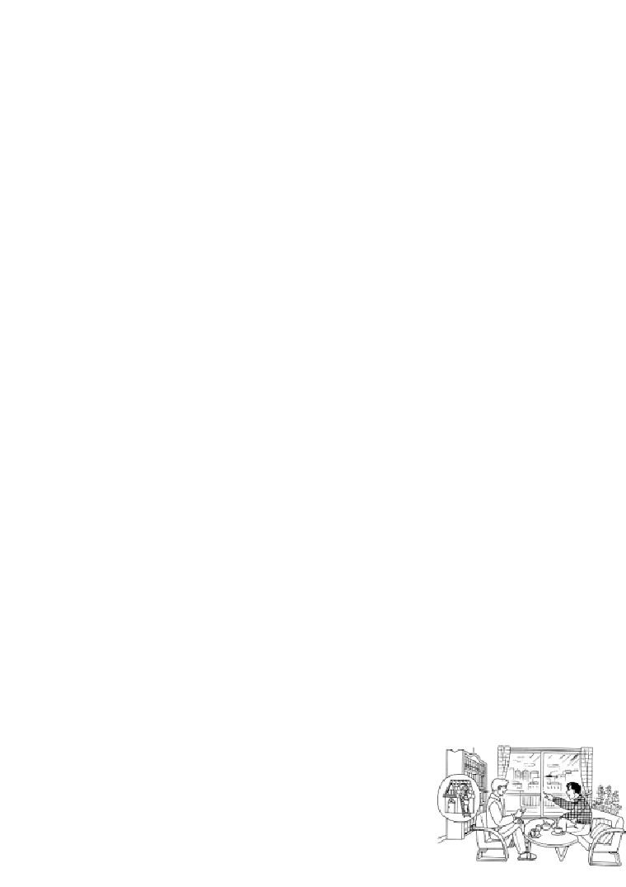
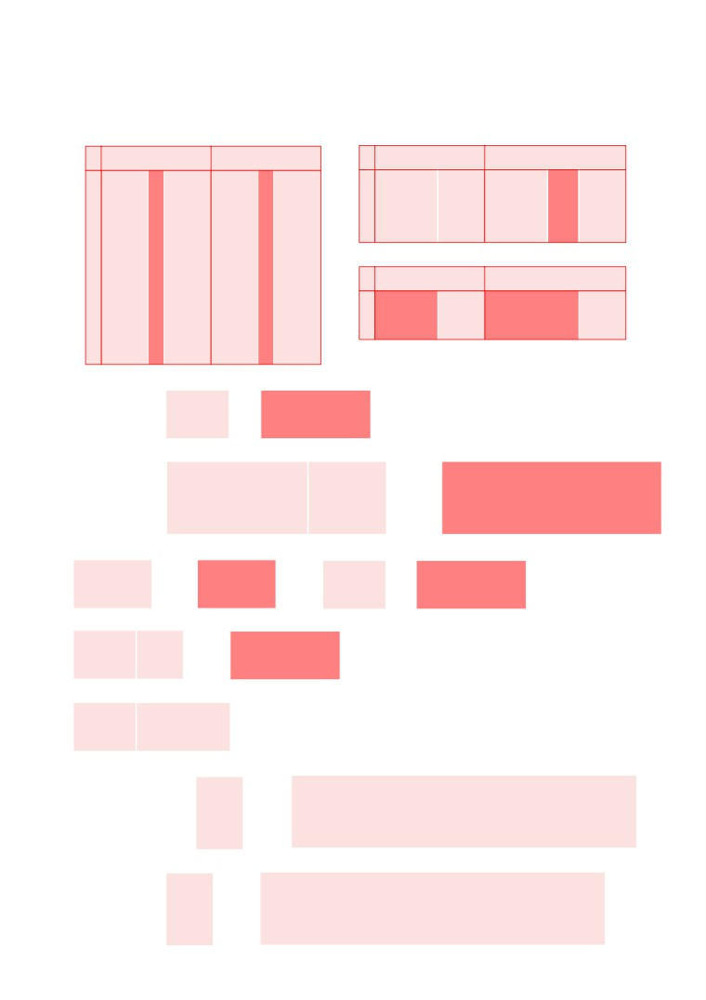
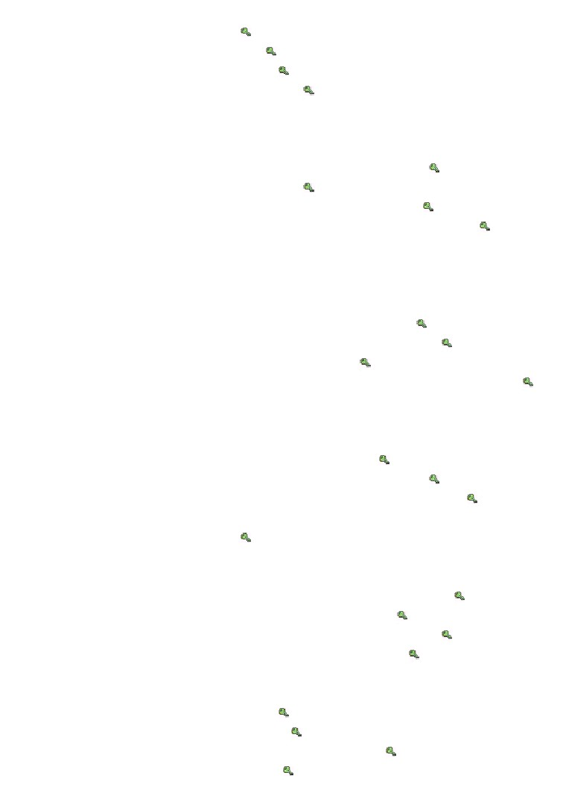
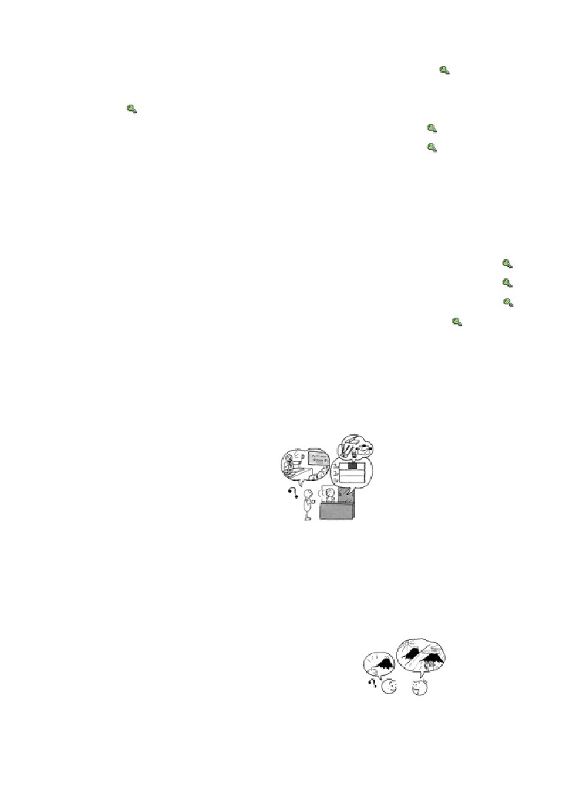
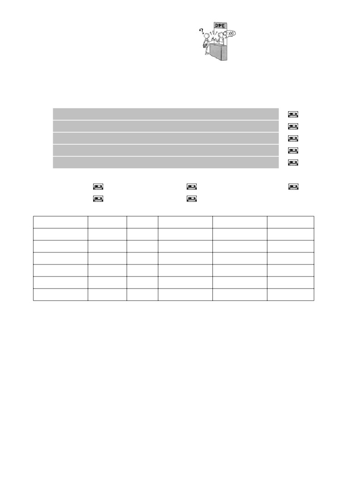
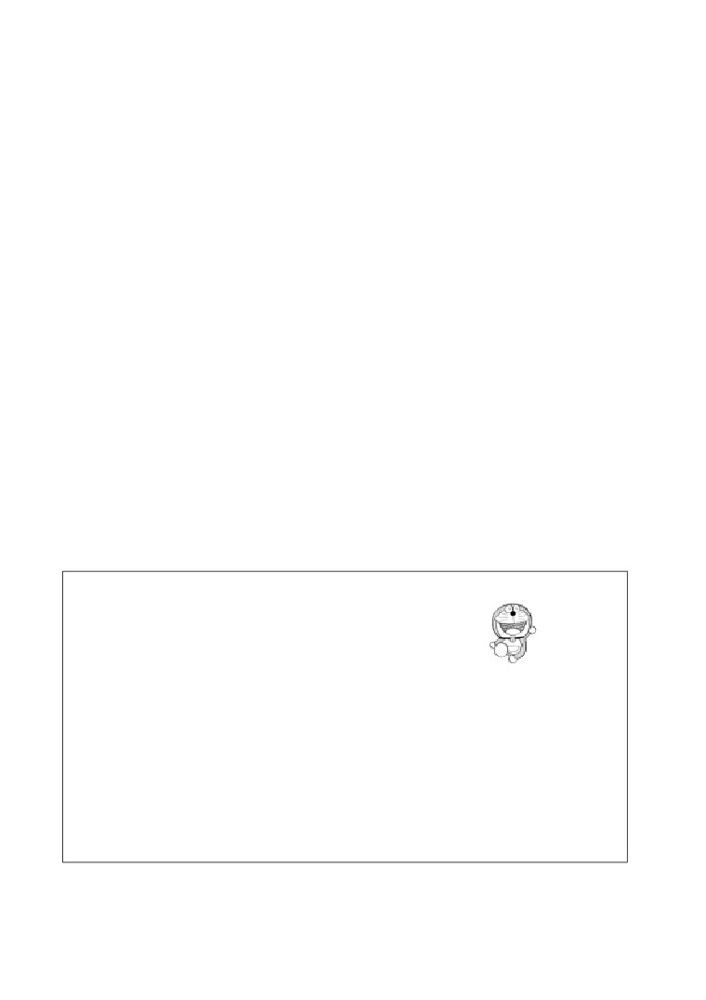
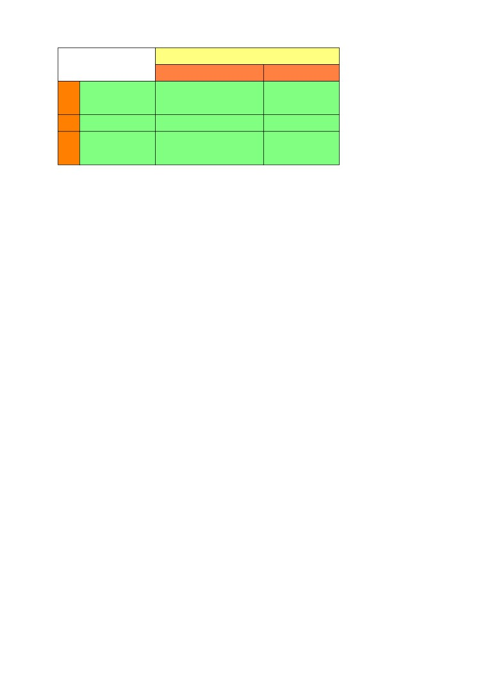
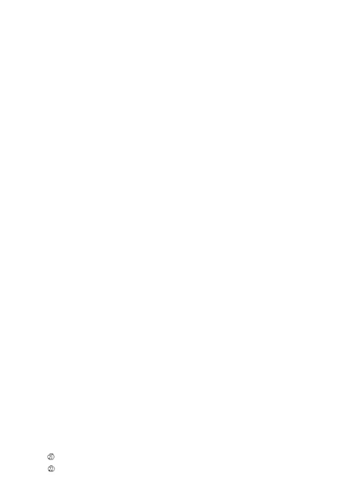

第２７課
課:27 (頁:1/10)
ことば
1. かいます Ⅰ
飼います
飼養，餵
2. たてます Ⅱ
建てます
修建
3.
はしります
Ⅰ
走ります
〔在路上
〕跑
［みちを～］
［道を～］
4.
とります
Ⅰ
取ります
取得，請 假〕
［やすみを～］
［休みを～］
5.
みえます
Ⅱ
見えます
看得見 山
［やまが～］
［山が～］
6.
きこえます
Ⅱ
聞こえます
聽得見〔
聲音〕
［おとが～］
［音が～］
7.
できます
Ⅱ
建好，修好〔
機場〕
［くうこうが～］
［空港が～］
8.
ひらきます
Ⅰ
開きます
開〔
講座〕
［きょうしつを～］
［教室を～］
9. ぺット
寵物
10. とり
鳥
鳥
11. こえ
声
聲音
12. なみ
波
波浪
13. はなび
花火
煙火
14. けしき
景色
景色
15. ひるま
昼間
白天
16. むかし
昔
從前，以前
17. どうぐ
道具
工具
18. じどうはんばいき
自動販売機
自動販賣機
19. つうしんはんばい
通信販売
郵購
20. クリーニング
（乾）洗，洗衣
21. マンション
高級公寓
22. だいどころ
台所
廚房
23. ～きょうしつ
～教室
～課
24. パーティールーム
宴會廳
25. ～ご
～後
～之後

26.
～しか
只有～（和否定一起使用課:27 (頁:2/10)
27. ほかの
別的
28. はっきり
清楚地
29. ほとんど
幾乎所有的（用在肯定句）
幾乎都不（用在否定句）
かん さい くう こう
30. ※関西空港
關西機場
あき は ばら
31. ※秋葉原
秋葉原
い ず
32.
※伊豆
伊豆
かい わ
会話
にち よう だい く
日曜大工
星期天做木工
ほん だな
本棚
書架
ゆめ
夢
夢 ～を みます：做夢）
いつか
什麼時候
いえ
家
家，房子
すばらしい
極好，很棒
よ
もの
…読み物…………………………………………………………………………
こ
子どもたち
孩子們
だい す
大好き［な］
非常喜歡〔的〕
まん が
漫画
漫畫，連環畫
しゅ じん こう
主人公
主人翁
かたち
形
形狀，樣子
ロボット
機器人
ふ し ぎ
不思議［な］
不可思議〔的〕
ポケット
口袋
たと
例えば
例如
つ
付けます Ⅱ
戴上
じ ゆう
自由に
自由地
そら
空
天空
と
飛びます Ⅰ
飛，飛翔
じ ぶん
自分
自己
しょう らい
将来
將來
※ドラえもん
機器貓小叮噹
……………………………………………………………………………………
ぶん けい
文型

に ほん ご
すこ
はな
課:27 (頁:3/10)
1.
わたしは 日本語が 少し 話せます。
やま
うえ
まち
み
2.
山の 上から 町が 見えます。
えき
まえ
おお
3.
駅の 前に 大きい スーパーが できました。
れい ぶん
例文
に ほん ご
しん ぶん
よ
1.
日本語の 新聞が 読めますか。
よ
…いいえ、読めません。
でん き
なつ やす
なん にち
と
2.
パワー電気では 夏休みは 何日ぐらい 取れますか。
しゅう かん
…そうですね。 3週間ぐらいです。
かい しゃ
しゅう かん
やす
いいですね。 わたしの 会社は 1週間しか 休めません。
か
3.
この マンションで ペットが 飼えますか。
ちい
とり
さかな
か
いぬ
ねこ
か
…小さい 鳥や 魚は 飼えますが、犬や 猫は 飼えません。
とう きょう
ふ じ さん
み
4.
東京から 富士山が 見えますか。
むかし
み
いま
み
…昔は よく 見えましたが、今は ほとんど 見えません。
とり
こえ
き
5.
鳥の 声が 聞こえますね。
はる
…ええ。もう 春ですね。
かん さい くう こう
6.
関西空港は いつ できましたか。
ねん
あき
…1994年の 秋に できました。
か
7.
すてきな かばんですね。 どこで 買ったんですか。
つう しん はん ばい
か
…通信販売で 買いました。
デパートにも ありますか。
おも
…デパートには ないと 思いますよ。
かい わ
会話
なん
つく
何でも 作れるんですね
すず
き
あか
へ や
鈴 木：
明るくて、いい 部屋ですね。
てん き
ひ
うみ
み
ミラー： ええ。 天気が いい 日には 海が 見えるんです。
すず
き
鈴 木：
この テーブルは おもしろい デザインですね。
か
アメリカで 買ったんですか。
つく
ミラー： これは わたしが 作ったんですよ。
すず
き
鈴 木：
えっ、ほんとうですか。
にち よう だい く
しゅ み
ミラー： ええ。 日曜大工が 趣味なんです。
すず
き
ほん だな
つく
鈴 木：
へえ。 じゃ、あの 本棚も 作ったんですか。
ミラー： ええ。

すず
き
なん
つく
課:27 (頁:4/10)
鈴 木：
すごいですね。 ミラーさん、何でも 作れるんですね。
ゆめ
じ ぶん
いえ
た
ミラー： わたしの 夢は いつか 自分で 家を 建てる
ことなんです。
すず
き
ゆめ
鈴 木：
すばらしい 夢ですね。
れん しゅう
練習 Ａ
か のう
か のう
1.
可能
可能
Ⅰ
ひ き
ます
ひ け
ます
Ⅱ
たて
ます
たて
られ
ます
およ ぎ
ます
およ げ
ます
おぼえ ます
おぼえ
られ
ます
よ み
ます
よ め
ます
おり ます
おり
られ
ます
あそ び
ます
あそ べ
ます
か のう
はし り
ます
はし れ
ます
可能
うた い
ます
うた え
ます
Ⅲ
き ます
こられ
ます
も ち
ます
も て
ます
し ます
＊でき
ます
なお し
ます
なお せ
ます
2. わたしは
はし
が
つかえます。
きもの
きられます。
3. わたしは
にほんご
しか
わかりません。
に ほん ご
日本語が
すこし
はなせません。
に ほん ご
きのう 日本語を
1じかん
べんきょうしませんでした。
4.
ひらがな は
かけます が、 かんじ は
かけません。
やきゅう
できます
テニス
できません。
まど
5.
窓から
やま
が
みえます。
なみ
波の
おと
きこえます。
おお
6.
大きい
はし
が できました。
ばんごはん
がっ こう
じん
せん せい
7.
わたしの 学校
に
は
アメリカ人の 先生が います。
ご
べんきょう
で
フランス語を 勉強しなければ なりません。
うみ
やま
み
から
海と 山が 見えます。
おとうと
がっ こう
じん
せん せい
弟の 学校
に
も
アメリカ人の 先生が います。
ご
べんきょう
で
フランス語を 勉強しなければ なりません。
うみ
やま
み
から
海と 山が 見えます。
れん しゅう
練習 Ｂ

れい
に ほん りょう り
つく
に ほん りょう り
つく
課:27 (頁:5/10)
1.
例： 日本料理を 作ります →
日本料理が 作れます。
かん じ
よ
1)
漢字を 読みます →
じ てん しゃ
しゅう り
2)
自転車を 修理します →
くるま
と
3)
ここに 車を 止めます →
ひとり
い
4)
どこでも 一人で 行きます →
れい
やく そく
の
い
2.
例： 約束が あります・きょうは 飲みに 行きません
やく そく
の
い
→ 約束が ありますから、きょうは 飲みに 行けません。
ちょう し
わる
た
1)
おなかの 調子が 悪いです・あまり 食べません →
あし
いた
はし
2)
足が 痛いです・走りません →
ちゅう ごく
げつ しゅっちょう
らい げつ
あ
3)
中国へ 2か月 出張します・来月は 会いません →
かね
た
か
4)
お金が 足りませんでした・パソコンを 買いませんでした →
れい
やす
か
あき は ばら
3.
例： どこで 安い ビデオを 買いますか。（ 秋葉原 ）
やす
か
→ どこで 安い ビデオが 買えますか。
あき は ばら
か
……秋葉原で 買えます。
ふ じ さん
のぼ
がつついたち
1)
いつから 富士山に 登りますか。（ 7月1日 ） →
かね
か
ぎん こう
2)
どこで お金を 換えますか。（ 銀行や ホテル ） →
なん にち
ほん
か
しゅう かん
3)
何日 本を 借りますか。（ 2週間 ） →
なん じ
か
もの
よる
じ はん
4)
この デパートでは 何時まで 買い物しますか。（ 夜 7時半 ） →
れい
おと
ちい
き
4.
例： 音が 小さいです・よく 聞こえません
おと
ちい
き
→ 音が 小さいですから、よく 聞こえません。
うみ
ちか
なみ
おと
き
1)
海が 近いです・波の 音が 聞こえます →
てん き
けし き
み
2)
天気が よかったです・景色が よく 見えました →
み
すこ
まえ
すわ
3)
はっきり 見えません・もう 少し 前に 座りましょう →
き
すこ
おお
こえ
はな
4)
うしろまで 聞こえません・もう 少し 大きい 声で 話して
いただけませんか →
れい
なに
び じゅつ かん
び じゅつ かん
5.
例： ここに 何が できますか。（ 美術館 ） →
美術館が できます。
えき
まえ
なに
や
1)
駅の 前に 何が できますか。（ クリーニング屋 ） →
しゃ しん
ご ご
じ
2)
写真は いつ できますか。（ 午後 5時 ） →
くう こう
おお さか
ちか
3)
空港は どこに できましたか。（ 大阪の 近く ） →
とも だち
4)
友達が できましたか。（ はい、たくさん ） →
れい
さけ
すこ
の
さけ
すこ
の
6.
例： お酒は 少しだけ 飲めます →
お酒は 少ししか 飲めません。
か
1)
ひらがなだけ 書けます →
およ
2)
50メートルだけ 泳げます →
かい しゃ
がい こく じん
にん
3)
この 会社に 外国人は 3人だけ います →
まい にち
じ かん
ね
4)
毎日 4時間だけ 寝ます →

れい
か
課:27 (頁:6/10)
7.
例： この マンションで ペットが 飼えますか。
ちい
とり
いぬ
ねこ
（ 小さい 鳥・犬や 猫 ）
ちい
とり
か
いぬ
ねこ
か
→ 小さい 鳥は 飼えますが、犬や 猫は 飼えません。
がい こく ご
はな
えい ご
1)
外国語が 話せますか。（ 英語・ほかの ことば ） →
に ほん りょう り
なん
た
や
2)
日本料理は 何でも 食べられますか。（ てんぷらや すき焼き・すし ）
→
へ や
やま
うみ
み
やま
うみ
3)
部屋から 山や 海が 見えますか。（ 山・海 ） →
しゅうまつ
やす
にち よう び
ど よう び
4)
この 週末は 休めますか。（ 日曜日・土曜日 ） →
れい
た なか
あ
やま だ
8. 例1： パーティーで 田中さんに 会いましたか。（ はい・山田さん ）
あ
やま だ
あ
→ はい、会いました。山田さんにも 会いましたよ。
れい
た なか
あ
例2： パーティーで 田中さんに 会いましたか。（ いいえ ）
た なか
あ
→ いいえ、田中さんには 会いませんでした。
まつ
はな び
み
1)
ここから お祭りの 花火が 見えますか。（ はい・あそこ ） →
う
2)
あの スーパーで ワインを 売って いますか。（ いいえ ） →
かい
の
もの
じ どう はん ばい き
かい
3)
2階に 飲み物の 自動販売機が ありますか。（ はい・1階 ） →
でん わ
がい こく
4)
この 電話で 外国に かけられますか。（ いいえ ） →
れん しゅう
練習 Ｃ
りょう り きょう しつ
ひら
1. Ａ: あのう、こちらで 料理教室が 開けますか。
かい
だいどころ
Ｂ: ええ。 3階に 台所が あります。
どう ぐ
か
Ａ: 道具も 借りられますか。
か
Ｂ: ええ、借りられます。
1) パーティーを します
パーティールーム
つか
カラオケも 使います
かい ぎ しつ
か
2) 会議室を 借ります
かい ぎ しつ
会議室
コピーも します
せん げつ
ひ
こ
2. Ａ:
先月 引っ越ししました。
Ｂ: えっ、どこですか。
い ず
Ａ: 伊豆です。
ふ じ さん
み
Ｂ: いいですね。 富士山が 見えるでしょう？
てん き
ひ
み
Ａ: 天気が いい 日には 見えますが、
あめ
ひ
み
雨の 日には ほとんど 見えません。
とり
こえ
き
1)
鳥の 声が 聞こえます
あさ
ひる ま
朝
昼間
うみ
み
2)
海が 見えます
ちか
やま
近くの 山から
わたしの うちから

ねが
課:27 (頁:7/10)
3. Ａ:
これ、お願いします。
Ｂ: はい。
Ａ: いつ できますか。
じ
Ｂ:
3時ごろ できます。
ねが
Ａ: じゃ、よろしく お願いします。
くつ
しゅう り
じ かん ご
1) 靴の 修理
1時間後に
すい よう び
2) クリーニング
水曜日に
もん だい
問題
れい
おぼ
1.
1)
…例： いいえ、なかなか覚えられません。
れい
よ
かん じ
よ
2)
…例： ひらがなとかたかなは読めますが、漢字は読めません。
れい
み
3)
…例： いいえ、見えません。
れい
し やく しょ
ねん
4)
…例： 市役所です。130年まえにできました。
れい
くに
き せつ ふた
5)
…例： いいえ、わたしの国には季節が2つしかありません。
2.
1)
( 〇 )
2)
( × )
3)
( 〇 )
4)
( 〇 )
5)
( × )
れい
い
い
い
よ
よ
よ
3.
例：行きます
行けます
行ける
7) 呼びます
呼べます
呼べる
か
か
か
か
か
か
1) 書きます
書けます
書ける
8) 買います
買えます
買える
およ
およ
およ
た
た
た
2) 泳ぎます
泳げます
泳げる
9) 食べます
食べられます
食べられる
はな
はな
はな
ね
ね
ね
3) 話します
話せます
話せる
10) 寝ます
寝られます
寝られる
か
か
か
お
お
お
4) 勝ちます
勝てます
勝てる
11)降ります
降りられます
降りられる
の
の
の
き
こ
こ
5) 飲みます
飲めます
飲める
12) 来ます
来られます
来られる
かえ
かえ
かえ
6) 帰ります
帰れます
帰れる
13) します
できます
できる
れい
かん たん
に ほん りょう り
つく
4. 例： 簡単な 日本料理を 作る ことが できます
かん たん
に ほん りょう り
つく
→ （ 簡単な 日本料理が 作れます ）。
つか
つか
1)
パソコンを 使う ことが できます → （ パソコンが使えます ）。
はら
はら
2)
カードで 払う ことが できます → （ カードで払えます ）。
に ほん じん
な まえ
おぼ
3)
日本人の 名前を すぐ 覚える ことが できません
に ほん じん
な まえ
おぼ
→ （ 日本人の名前がすぐ覚えられません ）。
なが
やす
と
4)
長い 休みを 取る ことが できませんでした
なが
やす
と
→ （ 長い休みが取れませんでした ）。
れい
えい が
み
5. 例： テレビで 映画を 見ますか。（ ニュース ）
み
…（ いいえ、ニュースしか 見ません ）。
なん
1)
スポーツは 何でも しますか。（ テニス ）
…（ いいえ、テニスしかしません ）。
ど よう び
やす
にち よう び
2)
土曜日も 休めますか。（ 日曜日 ）
にち よう び
やす
…（ いいえ、日曜日しか休めません ）。

ね
すこ
課:27 (頁:8/10)
3)
きのうは よく 寝られましたか。（ 少し ）
すこ
ね
…（ いいえ、少ししか寝られませんでした ）。
がい こく じん
せん せい
し
せん せい
4)
外国人の 先生を みんな 知って いますか。（ ワット先生 ）
せん せい
し
…（ いいえ、ワット先生しか知りません ）。
れい
ほん
ざっ し
か
ほん
ざっ し
6. 例： 本や 雑誌が 借りられますか。（ 本、雑誌 ）
ほん
か
ざっ し
か
…（ 本は 借りられますが、雑誌は 借りられません ）。
いぬ
ねこ
す
いぬ
ねこ
1)
犬や 猫が 好きですか。（ 犬、猫 ）
いぬ
す
ねこ
す
…（ 犬は好きですが、猫は好きじゃありません ）。
さけ
なん
の
2)
お酒は 何でも 飲めますか（ ビール、ワイン ）
の
の
…（ ビールは飲めますが、ワインは飲めません ）。
か ぞく
かれ
はな
あね りょう しん
3)
家族に 彼の ことを 話しましたか。（ 姉、両親 ）
あね
はな
りょう しん
はな
…（ 姉には話しましたが、両親には話しませんでした ）。
ふ じ さん
のぼ
がつ
がつ
がつ
がつ
4)
富士山には いつでも 登れますか。（ 7月と 8月、9月から 6月まで ）
がつ
がつ
のぼ
がつ
がつ
のぼ
…（ 7月と8月は登れますが、9月から6月までは登れません ）。
れい
じ ぶん
た
7. 例： ミラーさんは 自分で うち （ を ） 建てる ことが できます。
やま
うえ
うみ
み
1)
山の 上 （ から ） 海 （ が ） 見えます。
でん わ ばん ごう
し
じゅう しょ
し
2)
電話番号 （ は ） 知って いますが、住所 （ は ） 知りません。
がっ こう
ちか
や
3)
学校の 近く （ に ） パチンコ屋 （ が ） できました。
くう こう
でん しゃ
い
い
4)
空港へは 電車で 行けますか。…ええ、バスで （ も ） 行けますよ。
8.
ドラえもん
に ほん
こ
これは 「ドラえもん」です。日本の 子どもたちは
だい す
まん が
しゅ じん こう
ねこ
ドラえもんが 大好きです。 漫画の 主人公で、猫の
かたち
形の ロボットです。
ふ し ぎ
も
ドラえもんは 不思議な ポケットを 持って いて、
もの
だ
たと
いろいろな 物が 出せます。 例えば、「タケコプター」や
あたま
つ
じ ゆう
「タイムテレビ」です。「タケコプター」を 頭に 付けると、自由に
そら
と
むかし
じ ぶん
しょう らい
じ ぶん
空を 飛べます。「タイムテレビ」では 昔の 自分や 将来の 自分が
み
見られます。
ほ
もの
わたしが いちばん 欲しい 物は 「どこでもドア」です。この
あ
い
ところ
い
みな
ドアを 開けると、どこでも 行きたい 所へ 行けます。 皆さん、もし
あ
もの
だ
ドラえもんに 会えたら、どんな 物を 出して もらいたいですか。
どう ぶつ
1)
（ × ） ドラえもんは 動物です。
べん り
もの
だ
2)
（ 〇 ） ドラえもんは ポケットから 便利な 物を 出します。
そら
と
の
3)
（ × ） 空を 飛びたい とき、「タケコプター」に 乗ります。
い
（ 〇 ）「どこでもドア」が あったら、どこでも 行けます。
4)

文法
課:27 (頁:9/10)
１ 可能動詞
可能動詞的變換方法（參考本冊12頁第27課練習A1）
可能動詞
禮貌形
普通形
Ⅰ
かきます
かけます
かける
かいます
かえます
かえる
Ⅱ
たべます
たべられます
たべられる
Ⅲ
きます
こられます
こられる
します
できます
できる
可能動詞的變化是以第二類動詞的形式，變換成字典形、ない形、て形等。
例：かける、かけ（ない）、かけて
「わかる」本身就表示可能的意思，所以不說「わかれる」。
２ 可能動詞句
1） 可能動詞不是表示動作而是表示狀態。他動詞的受詞可以用助詞「
を」表示，
但是可能動詞句中，對象一般用「が
」表示。
に ほん ご
はな
①わたしは 日本語を 話します。
我說日語。
に ほん ご
はな
②わたしは 日本語が 話せます。
我會說日語。
「を
」以外的助詞不變化。
ひ と り
びょう いん
い
③一人で 病院へ 行けますか。
一個人能去醫院嗎？
た なか
あ
④田中さんに 会えませんでした。
沒能見到田中先生。
2）可能動詞裡包含著人擁有的行為能力（
⑤），和某種狀態下行為的可能性（
⑥）
這二個意思。
かん じ
よ
⑤ミラーさんは 漢字が 読めます。
米勒先生會讀漢字。
ぎん こう
か
⑥この 銀行で ドルが 換えられます。 這家銀行可以兌換美元。
み
き
３
.「 見えます 」和「 聞こえます 」
「みます」「ききます」的可能形是「みられます」「きけます」。這表示主
體看和聽的意志得以實現。相對於此，「みえます」「きこえます」則與本人
的意志無關，只表示某一對象物能在視野裡捕捉到，或者某種聲響或聲音傳到
耳朵裡。用「みえます」「きこえます
」的句子，對象物是主語，用助詞「が
」
表示。
しん じゅく
いま
くろ さわ
えい が
み
⑦新宿で 今 黒沢の 映画が 見られます。
在新宿現在可以看黑澤明導演的電影。
しん かん せい
ふ じ さん
み
⑧新幹線から 富士山が 見えます。
從新幹線看得到富士山。
でん わ
てん き よ ほう
き
⑨電話で 天気 予報が 聞けます。
用電話可以聽天氣預報。
おと
き
⑩ラジオの 音が 聞こえます。
聽得到收音機的聲音。

４ できます
課:27 (頁:10/10)
這裡學習的動詞「できます」，表示產生、完成、做完、能做等意思。
えき
まえ
おお
⑪駅の 前に 大きい スーパーが できました。
車站前完成了一座大型超市。
と け い
しゅう り
⑫時計の 修理は いつ できますか。
錶的修理什麼時候能完成呢？
５
.は
1） では／には／へは／からは／までは等
「は」用於把名詞提示為主題時，正如第10、17、26課中所學，將助詞「が」
「を」前的名詞提示為主題時，「は」將取代「 」「を」。後續的是其他的
助詞（例如： ﹑に﹑へ等）時，「
は」則放在其後來提示。
がっ こう
じん
せん せい
⑬わたしの 学校には アメリカ 人の 先生が います。
我的學校裡有美籍老師。
がっ こう
ちゅう ごく ご
なら
⑭わたしの 学校では 中国語が 習えます。
我的學校裡可以學中文。
2） 「は」有對比的功能。
やま
み
み
⑮きのうは 山が 見えましたが、きょうは 見えません。
昨天看到了山，今天看不到。
の
の
⑯ワインは 飲みますが、ビールは 飲みません。
我喝葡萄酒，但不喝啤酒。
きょう と
い
おお さか
い
⑰京都へは 行きますが、 大阪へは 行きません。
要去京都，但不去大阪。
６ .も
和「は」相同，助詞「も」和其他的助詞一起使用時，雖然可以取代「を」、
「が」，但要放在其他助詞之後。助詞是「へ」時可以省略。
えい ご
はな
ご
はな
⑱クララさんは 英語が 話せます。 フランス 語も 話せます。
克拉拉既會說英語，也會說法語。
きょ ねん
い
い
⑲去年 アメリカへ 行きました。 メキシコ［へ］も 行きました。
去年我去了美國，也去了墨西哥。
へ や
うみ
み
おとうと
へ や
み
⑳わたしの 部屋から 海が 見えます。 弟の 部屋からも 見えます。
從我的房間可以看到海，從弟弟的房間也看得到。
７ .しか
「しか」接續名詞、數量詞之後，常和表示否定的詞一起使用，表示只強調和
限定一項，此外都是否定的意思。可以取代「 」「
」，但要接在其他助詞
之後。相對於「だけ」用於表示肯定的語感，「しか」則用於否定的語感。
じ
か
ローマ字しか 書けません。
只會寫羅馬拚音。
じ
か
ローマ字だけ 書けます。
只會寫羅馬拚音。